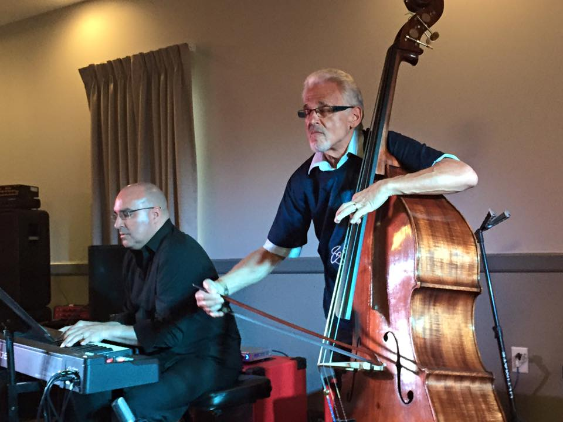
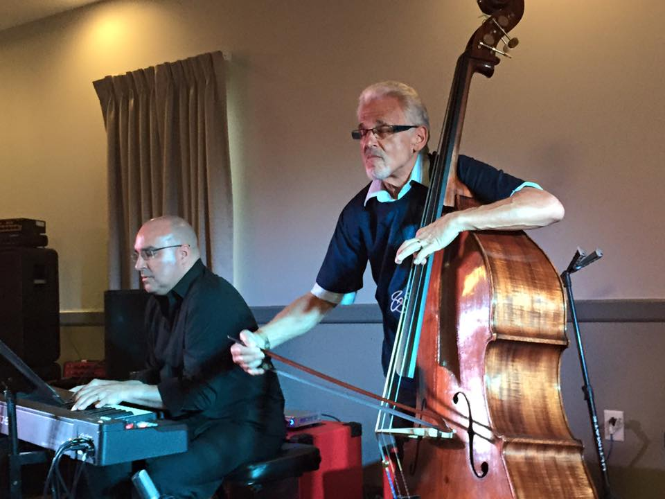
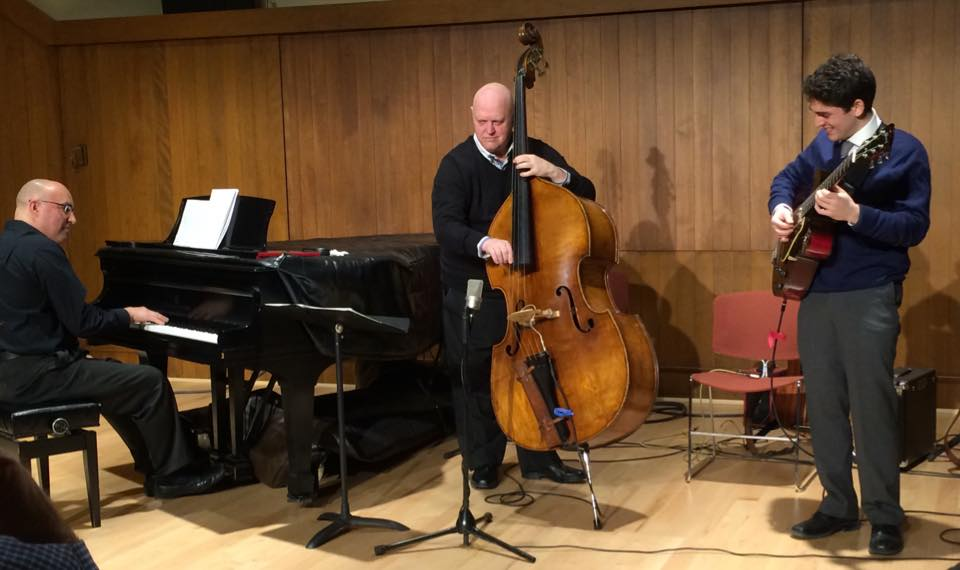
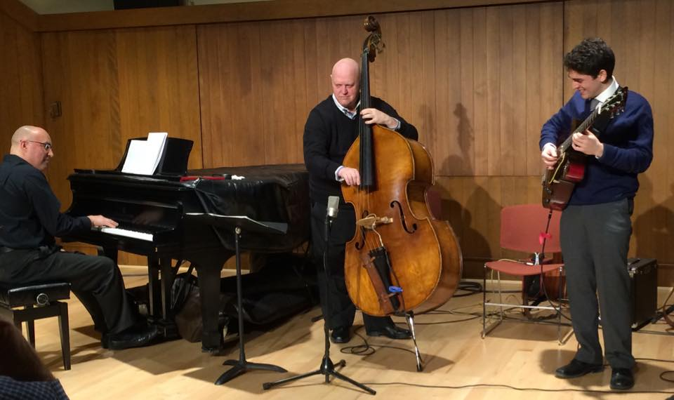

SmithPiano
Piano technical & musical services in New England for over 25 years
 

 

II III II III II III II III II III II III II III
Pianist, Keyboardist, Accompanist, Musical Director
Acoustic & Electric Jazz - Funk - Latin - Musical Theater
Performance, Recording, Touring & Teaching
Wes'n: A Tribute to Wes Montgomery
Michael Blum (guitar), Chip McNeill (sax), Jim Stinnett (bass), Brad Smith (piano), Dave DiCenso (drums)
Recorded at Jon Chase Studio 2017
Bio
Brad Smith is a highly regarded professional accompanist, keyboardist and leader in jazz, musical theatre, blues, funk and Latin music in Boston. He has worked as a show band pianist on cruise ships, including Premiere (Disney) and Princess cruise lines. Notable Boston area performances include cabaret with vocalist Diva Taunia, an early recording with Spanish cabaret star Alphonso Villalonga, jazz with vocalist Janine Graham, performances and recording with British guitarist Conrad Warre (Bees Deluxe trio) and performances with Afro-Latin percussionist Cornell Coley, among others.
In 2007, Brad met Latin jazz guitarist Roderick Camelia, beginning a serious study of Latin music. The Camelia Latin Jazz format requires the keyboardist to play left hand bass with montuno rhythms in the right hand, for salsa, merengue, bachata, samba, cumbia and cha-cha styles. As a result, Brad has worked with the best Latin musicians in Boston including, Angel Wagner (Grupo Fantasia), Willie Colon (Grupo Chevere), Willy Cotto (Orquestra Unicason), Rafy Muriel (Gozarsa), Gilberto Rivera (Rumbanama), Van Lester (musical heir to Hector Lavoe via Fania Records) and concert appearances with Yaure Muniz (lead trumpeter of Afro-Cuban All Stars). Brad has been pianist with Sabor Picante (Ernesto Lugo) since 2012, performing at the Boston Puerto Rican festival in 2014 and the Boston Betances Latin festival annually.
Brad has recorded as a sideman on eight albums in jazz, funk and musical theater.
He has also been fortunate to work with Berklee faculty member, bassist and arranger Jim Stinnett on
multiple
recordings and performances in jazz and pop. A career highlight of 2015 was the opportunity for Brad to
accompany
classical double-bass virtuoso Gary Karr at the NH Bass Festival (thanks to Jim Stinnett) in a variety of
formats
from Saint-Saëns to Gershwin. The week also included jazz bass legend Eddie Gomez who performed at the
festival,
with accompanying in duo, trio and quartet formats.
Brad is available for performing, touring and recording anywhere in the world.
Trio Concert: Eddie Gomez (bass), Dom Moio (drums): NH Bass Fest
Trio gig: Richard Hale Shaw (bass), Gilian DeLear (drums)
Trio Concert: Zachary Winter (bass), Joe Hunt (drums): Tribute to Ray Brown
Resume
EDUCATION
Private lessons in Jazz Improvisation with Charlie Banacos, Boston, MA 1988-1990Classical Piano & Weight Technique with Kathy Rand, Boston Conservatory, 1987-1989
B.A. Degree, Professional Music, Berklee College of Music, Boston, MA, 1985
Jazz piano and improvisation with Mike Marra, Boston, MA 1984-1985
Master class and private lessons with pianist Ken Werner, Boston, MA 1984
Classical piano with Dr. George Mulder, Interlochen Arts Academy, Interlochen, Michigan 1973-1977
EXPERIENCE
Pianista para Sabor Picante, Salsa y Latin Jazz, 2012-2017
Jazz Piano Trio concert with Zach Winter (bass), Joe Hunt(drums), Boston Oct 2017
Pianist with Carlos Torres' Mambo Magic, Festival Betances, Boston 2016
Accompanist for Royal Carribean Cruise Lines, Boston auditions, Summer 2016
Pianist with Camelia Latin Jazz Quintet, Festival Betances, Boston 2015
Accompanist with classical virtuoso bassist Gary Karr, NH Bass Fest 2015
Duo, trio & quartet performances with jazz bass legend Eddie Gomez, NH Bass Fest 2015
Pianist with Afrika Gente, afro-Latin jazz, various performances 2015-16
Duo with African drummer Cornell Coley (Afrika Gente leader) 2015-16
Pianist with Willie Cotto y Orquesta Unicason, Worcester, MA 2014
Pianist with Salsa singer Van Lester at Boston Puerto Rican Festival 2014
Pianist with Rafael Muriel Salsa Grupo at Festival Betances, Boston 2014
Pianist with Sabor Picante, Festival Betances, Boston, 2014
Keys & keyboard bass with Dominique Dinardo & Reid Trevaskas, N’awlins, Manchester, NH 2013-2014
Keyboardist with Manchuka 10 piece funk dance band 2009 & 2014
Jazz piano and keyboards with Stan Johnson, Chops Turner and Lori Dow, Boston, MA 2012-2014
Jazz piano and organ with Don Altobello Jazz Sextet, Boston, MA 2012-2014
Jazz piano with Richard Hale Shaw & Jazz Continuum, Boston MA 2012-2014
Jazz piano with Bopkick Jazz Quartet, Boston area 2009-2014
Pianist with Salsa artists Jose Salgado & Gilberto Rivera’s Rhumbanama, Lowell Puerto Rican Festival 2013
Keyboards with Sweet Willie D, swing, gospel, Blues & Soul quintet, Boston, MA 2013
Keyboards and Keys Bass with Bees Deluxe, blues-funk-rock trio, Boston, MA 2012-2013
Keyboards and Keyboard Bass with Jose Zayas and Fernanda Peirera, Worcester, MA 2012
Keyboards and Keyboard Bass with Roderick Camelia, Latin Jazz Trio, Boston area 2007-2011
Street Jazz & Latin Jazz performances with Brad Smith Trio in Boston area 2008-2016
Keyboards for Grupo Fantasia Salsa, Merengue, Bachata, Cha Cha, Latin Jazz, 2010
Accompanist for classical/sacred vocalists at Peterborough CS Church 2009-2011
BACKGROUND
Working pianist, since 1975 Age 13, When the band failed to show at the club where I washed dishes.Cover/Rock/Funk/Club Band “Sneaker” Gigged Around Northern Michigan, 1978-80
Pianist, Recorded With Chris Bickley Big Band, “Gonna Fly Now” In Imf – Ambisonic Format 1981
First Two Berklee Years, Studied With Dick Odgren, Mike Marra, Alex Elin, Bob Winter, Jeff Covell Started Apprenticeship
With Tom Sheehan, As Piano Technician At Berklee, 1981
Performed, Wrote & Arranged For Michigan Jazz Sextet, Equinox And Singer Robin Lee Berry 1982-1983
Instructor, Jazz Piano & Improvisation, Northwestern Michigan College 1983
Jazz Trio With Sky Elobar, Bass And Marcello Pelletieri, Drums, Boston, Ma 1984-1985
Music Therapist With Blind And Autistic Savant, Toren Hall, Mass Assoc. For The Blind 1985
Solo, Duo, Trio & Quartet Jazz Performances In Boston Clubs 1982-1993
Jazz Quartet With Mike Piepman, Trumpet Performed At Ryles, 1369 Club, Willow Jazz Club, 1985-1987
Cruise Ship House Band Pianist, With New Orleans Trumpeter Jamil Sharif, Premiere Cruise Lines 1988
Cruise Ship House Band Pianist, Princess Cruise Lines, Star Princess 1989
House Pianist, Ritz Hotel And Other Major Boston Hotels, For Curtis International Agency, Boston, Ma 1988-1992
Street Performing, Recording & Nyc Performances With French Singer, Gary Innocent 1986-1989
Pianist With Alphonse Villalong & The Cabaret Rose, 1989-1991
PERFORMED WITH
Stan Mark, Bruce Dunlap, Jamey Haddad, Skip Hadden, Jack Dryden, John Abercrombie, Donny Mccaslin, Tim Hagans, Bill Mobley, Ian Froman, Gene Jackson, Marcello Pelletieri, Alphonso Villalonga, Matt Wilson, Bob Nieske, David Clark, Jim Stinnett, Ratso Harris, Jamil Sharif, Jan Shapiro, Conrad Warre, Stan Johnson, Chops Turner, Gary Karr, Eddie Gomez

Michael Blum Quartet
Recorded at Jon Chase Studio July 2016
Michael Blum (guitar), Jim Stinnett (bass), Dom Moio (drums), Brad Smith (piano
Michael Blum, DOWNBEAT MAGAZINE 2015 “RISING STAR”
Recorded at Jon Chase Studio Jan 2015
Michael Blum (guitar), Jim Stinnett (bass), Dom Moio (drums), Brad Smith (piano

Michael Blum Quartet
Recorded at Jon Chase Studio 2014
See review of this album in the November 2014 issue of DownBeat
Michael Blum (guitar), Jim Stinnett (bass), Dom Moio (drums), Brad Smith (piano)

Chris Mewhinney Quartet/Quintet/Trio
Recorded at Jon Chase Studio 2013
Chris Mewhinney (bass), Jim Stinnett (bass), Michael Blum (Guitar), Dom Moio (drums), Brad Smith (piano)

Bees Deluxe
Recorded live at “The Grog” Newburyport, MA 2013
Conrad Warre, (guitar, vocal), Brad Smith (keys/bass),P(atrick Sanders (drums)

Simone Waddel
Recorded at Blue Jay Studios, Carlisle, MA 1996
Simone Waddel (vocals, composer), Jim Stinnett (bass, arranger), Tony Fesmire and Dennis Montgomery(vocals), Marco Abreu (guitar), Charles Haynes (drums), Germmain Nelson (piano), Brad Smith (piano & keyboards)

Alfonso Villalonga & The Cabaret Rose
Recorded at Blue Jay Studios, Carlisle, MA 1990
Alfonso Villalonga (vocalist, composer, arranger, conductor), Alan Bern (accordion), Bob Nieske (bass), Matt Wilson (drums), Johaness Ammon (violin), Jeff Warschauer (mandolin), Bryndis Baldursson (cello), Cece Giannotti (guitar), Dr No (drums), Roy Okutani (trumpet), Billy Novick (clarinet), Curtis Hasselbrink (trombone), Bevan Manson and Brad Smith (piano)